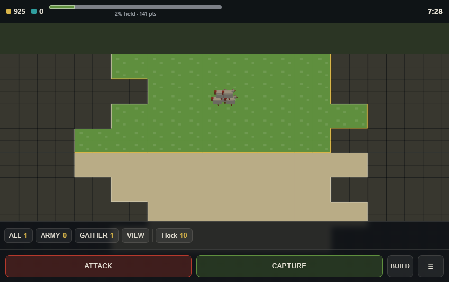

Farmy Uprising
Mother Nature woke the animals up. They want the farms gone, and they have ten minutes.

You are not scored on kills
The map is cut into sectors. Every second you hold one, it pays you, and after ten minutes whoever banked the most has won. That one rule decides everything else: taking ground early is worth more than taking it late, sitting still is a slow loss rather than a safe one, and a paddock somebody takes off you keeps costing you for the rest of the match.
An army that spends ten minutes fighting and never stands on anything loses, and it should.
Two sides that play nothing alike
The Waking Herd is not an army, it is a conversation that decided something. Animals come in packs rather than as individuals, they are cheap and fast, and they take ground almost instantly - but ground they walk away from starts going quiet fifteen seconds later and is neutral again inside a minute. The Herd is paid for tempo. It takes everything, holds nothing, and wins anyway by being in more places than you are.
The Yield Group is not a villain, it is a company with a duty of care. It has declared an animal welfare emergency and it is recovering escaped stock, with tractors, pound wagons, crop dusters and kilometres of electric fence. It claims ground slowly and then that ground is finished - nobody is taking it back without committing an army. The Yield is paid for patience.
The water is the real argument
Water sectors are worth double, and both sides want them for opposite reasons. The Yield puts a pump station on a dam, which pays well and poisons what is downstream of it. The Herd puts a reedbed on the same dam, which cleans it and brings ducks, and ducks are free hands. Each side's biggest scoring building needs the water in the state the other one is trying to prevent, so a catchment is not captured once - it is argued over for the whole match.
Two buttons and a thumb
Gathering happens by itself. New fighters walk to the front by themselves. What is left is ATTACK and CAPTURE: one tap each, sending your units at the nearest thing worth taking from wherever the bulk of your army already is - and both of them draw the ground they chose, so you can tell what the button is thinking.
Everything reachable by thumb is reachable by mouse and by controller. It is the same game three ways, not a phone version and a real one.
No account, no install, no server
Open the page and pick a side. There is nothing to register for, nothing to download, and the whole match runs in your browser. It works on a phone and on a work laptop that blocks everything else.
If you would rather be on the other end of a farm at night, Farmy Evil Hills is this studio's survival horror - same animals, considerably less negotiation.